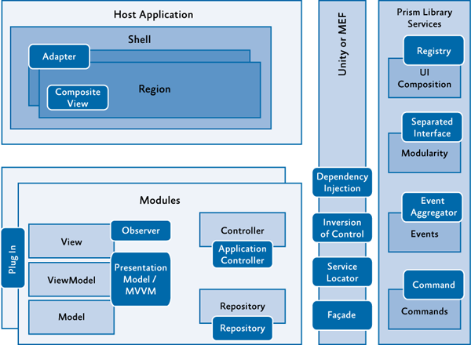
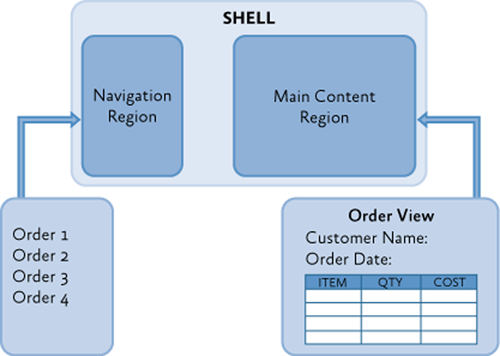

Patterns in the Prism Library for WPF
When you build applications, you typically encounter or employ patterns. In the Prism Library and example reference implementation, the guidance demonstrates the Adapter, Application Controller, Command, Composite and Composite View, Dependency Injection, Event Aggregator, Façade, Inversion of Control, Observer, Model-View-ViewModel (MVVM), Registry, Repository, Separated Interface, Plug-In, and Service Locator patterns that are briefly discussed in this appendix. The following illustration shows a typical composite application architecture using the Prism Library and some of the common patterns. A simpler application would likely encounter some of these patterns while using Prism, but not necessarily all of them.

Sample composite application architecture with common patterns
This section provides a brief overview of the patterns in alphabetical order and pointers to where you can see an example of each pattern in the Prism code.
Adapter
The Adapter pattern, as the name implies, adapts the interface of one class to match the interface expected by another class. In the Prism Library, the Adapter pattern is used to adapt regions to the Windows Presentation Foundation (WPF) ItemsControl, ContentControl, and Selector. To see the Adapters pattern applied, see the file ItemsControlRegionAdapter.cs in the Prism Library.
Application Controller Pattern
The Application Controller pattern allows you to separate the responsibility of creating and displaying views into a controller class. This kind of controller is a little different than the controller in an MVC application. The application controller's responsibility is to encapsulate the control of view presentation. It can take care of instantiating views; it does this by placing them in the appropriate container in the user interface (UI), switching between views that share the same container, and sometimes coordinates communication between views or view models. Even though the name of the pattern is Application Controller, controllers are often scoped to a subset of an application, such as a module controller in a Prism application or a controller that spans a set of related views. As a result, you will often have more than one controller in a Prism application. For an example implementation of this pattern, see the OrdersController class in the Stock Trader Reference Implementation (Stock Trader RI).
Command Pattern
The Command pattern is a design pattern in which objects are used to represent actions. A command object encapsulates an action and its parameters. This allows a decoupling of the invoker of the command and the handlers of the command. The Prism.Mvvm Library provides a CompositeCommand that allows combining of multiple ICommand items and a DelegateCommand that allows a ViewModel or controller to provide an ICommand that connects to local methods for execution and notification of ability to execute. To see the usage of the CompositeCommand and the DelegateCommand in the Stock Trader RI, see the files StockTraderRICommands.cs and OrderDetailsViewModel.cs.
Composite and Composite View
At the heart of a composite application is the ability to combine individual views into a composite view. Frequently, the composing view defines a layout for the child views. For example, the shell of the application may define a navigation area and content area to host child views at run time, as shown in the following illustration.

In the Stock Trader RI, this can be seen with the use of regions in the shell. The shell defines regions that modules locate and add views to during the initialization process. For examples of defining regions, see the Shell.xaml file.
Composite views do not have to be dynamically composed, as is the case when using Prism's regions. A composite view can also just be a view that is built up of several other child views that are statically composed through the UI definition. An example of this is child user controls that are declared in the Extensible Application Markup Language (XAML).
Dependency Injection Pattern
The Dependency Injection pattern is a specialized version of the Inversion of Control pattern (described later in this appendix) where the concern being inverted is the process of obtaining the needed dependency. Dependency Injection is used throughout the Stock Trader RI and the Prism Library. When using a container, the responsibility of construction is put on the container instead of the consuming class. During object construction, the dependency injection container resolves any external dependencies. Because of this, the concrete implementation of the dependencies can be changed more readily as the system evolves. This better supports testability and growth of a system over time due to looser coupling. The Stock Trader RI uses the Managed Extensibility Framework (MEF) to help manage dependencies between components. However, the Prism Library itself is not tied to a specific dependency injection container; you are free to choose whichever dependency injection container you want, but you must provide an adapter that implements the IServiceLocator interface. The Prism Library provides adapters for both the MEF and Unity Application Block (Unity). To see an example of a component with its dependencies resolved by injection in the Stock Trader RI, see the constructor in the NewsController.cs file. For examples using Unity, see the ModuleInit class in the UI Composition QuickStart.
Event Aggregator Pattern
The Event Aggregator pattern channels events from multiple objects through a single object to simplify registration for clients. In the Prism Library, a variation of the Event Aggregator pattern allows multiple objects to locate and publish or subscribe to events. To see the EventAggregator and the events it manages, see EventAggregator and the PubSubEvent in the Prism.PubSubEvents Library. To see the usage of the EventAggregator in the Stock Trader RI, see the file WatchListViewModel.cs.
Façade Pattern
The Façade pattern simplifies a more complex interface, or set of interfaces, to ease their use or to isolate access to those interfaces. The Prism Library provides façades for the container and the logging services to help isolate the library from changes in those services. This allows the consumer of the library to provide its own services that will work with the Prism Library. The IServiceLocator and ILoggerFacade interfaces define the façade interfaces the Prism Library expects when it communicates with a container or logging service.
Inversion of Control Pattern
Frequently, the Inversion of Control (IoC) pattern is used to enable extensibility in a class or framework. For example, a class designed with an eventing model at certain points of execution inverts control by allowing event listeners to take action when the event is invoked.
Two forms of the IoC pattern demonstrated in the Prism Library and Stock Trader RI include dependency injection and the Template Method pattern. Dependency injection is described earlier. In the Template Method pattern, a base class provides a recipe, or process, that calls virtual or abstract methods. Because of this, an inherited class can override appropriate methods to enable the behavior required. In the Prism Library, this is shown in the UnityServiceLocatorAdapter class. To see another example of using the Template pattern, see the file StockTraderRIBootstrapper.cs in the Stock Trader RI.
Observer Pattern
The Observer pattern seeks to decouple those interested in an object's state change from the changing object. In the .NET Framework, this is often seen through events. Prism demonstrates a variation of the Observer pattern to separate the request for interaction with the user from the actual chosen interaction. This is done through an InteractionRequest object that is often offered by a view model in the Model-View-ViewModel (MVVM) pattern.
This InteractionRequest is an object that encapsulates an event monitored by the view. When the view receives an interaction request, it can choose how to handle the interaction. A view may decide to display a modal window to provide feedback to the user, or it may display an unobtrusive notification without interrupting the user's workflow. Offering this request as an object provides a way to data-bind in WPF to the request and to specify the response without requiring code-behind in the view.
Model-View-ViewModel Pattern
Presentation Model is one of several UI patterns that focus on keeping the logic for the presentation separate from the visual representation. This is done to separate the concerns of visual presentation from that of visual logic, which helps improve maintainability and testability. Related UI patterns include Model-View-Controller (MVC) and Model-View-Presenter (MVP). The Model-View-ViewModel (MVVM) approach, demonstrated in the Prism's Stock Trader RI, is a specific implementation variant of the Presentation Model pattern.
The Prism Library itself is intended to be neutral with respect to choice of separated UI patterns. You can be successful with any of the patterns, although considering the facilities in WPF for data binding, commands, and behaviors, the MVVM pattern is the recommended approach and the Prism guidance provides documentation and samples to get you started using MVVM. To see examples of MVVM in the Basic MVVM QuickStart, see the files QuestionnaireView.xaml, QuestionnaireView.xaml.cs, and QuestionnaireViewModel.cs.
Registry Pattern
The Registry pattern specifies an approach to locating one or more objects from a well-known object. The Prism Library applies the Registry pattern when associating view types to a region. The IRegionViewRegistry interface and RegionViewRegistry class define a registry used to associate region names to the view types created when those regions are loaded. This registry is used in the ModuleInit.cs file in the UI Composition QuickStart.
Repository Pattern
A repository allows you to separate how you acquire data for an application from the code that needs the data. The repository represents a collection of domain objects that the application code can consume without needing to be coupled to the specific mechanism that retrieves those objects. The domain objects are part of the model of the application, and by obtaining those objects through a repository, the repository retrieval and update strategy can be changed without affecting the rest of the application. Additionally, the repository interface becomes an easy dependency to substitute for the purposes of unit testing.
Separated Interface and Plug-In
The ability to locate and load modules at run time opens greater opportunities for parallel development, expands module deployment choices, and encourages a more loosely coupled architecture. The following patterns enable this ability:
- Separated Interface. This pattern reduces coupling by placing the interface definition in a separate package from the implementation. When using Prism with Unity, each module implements the IModule interface. For an example of implementing a module in the UI Composition Quickstart, see the file ModuleInit.cs.
- Plug-In. This pattern allows the concrete implementation of a class to be determined at run time to avoid requiring recompilation when changing which concrete implementation is used or because of changes in the concrete implementation. In the Prism Library, this is handled through the DirectoryModuleCatalog, ConfigurationModuleCatalog, and the ModuleInitializer, which work together to locate and initialize IModule plug-ins. For examples of supporting plug-ins, see the files DirectoryModuleCatalog.cs, ConfigurationModuleCatalog.cs, and ModuleInitializer.cs in the Prism Library.
Note: MEF was designed to support the plug-in model, allowing components to declaratively export and import concrete implementations.
Service Locator Pattern
The Service Locator pattern solves the same problems that the Dependency Injection pattern solves, but it uses a different approach. It allows classes to locate specific services they are interested in without needing to know who implements the service. Frequently, this is used as an alternative to dependency injection, but there are times when a class will need to use service location instead of dependency injection, such as when it needs to resolve multiple implementers of a service. In the Prism Library, this can be seen when the ModuleInitializer service resolves individual IModules. For an example of using the UnityContainer to locate a service in the UI Composition Quickstart, see the file ModuleInit.cs.
More Information
The following are references and links to the patterns found in the Stock Trader RI and in the Prism Library:
- Composite pattern in Chapter 4, "Structural Patterns," in Design Patterns: Elements of Reusable Object-Oriented Software.
- Adapter pattern in Chapter 4, "Structural Patterns," in Design Patterns: Elements of Reusable Object-Oriented Software.
- Façade pattern in Chapter 4, "Structural Patterns," in Design Patterns: Elements of Reusable Object-Oriented Software.
- Template Method pattern in Chapter 5, "Behavioral Patterns," in Design Patterns: Elements of Reusable Object-Oriented Software.
- Observer pattern in Chapter 5, "Behavioral Patterns," in Design Patterns: Elements of Reusable Object-Oriented Software.
- Exploring the Observer Design Pattern on MSDN.
- Repository pattern in Patterns of Enterprise Application Architecture by Martin Fowler or the abbreviated version on his website.
- Inversion of Control containers and the Dependency Injection pattern on Martin Fowler's website.
- Plugin pattern on Martin Fowler's website.
- Registry pattern on Martin Fowler's website.
- Presentation Model pattern on Martin Fowler's website.
- Event Aggregator pattern on Martin Fowler's website.
- Separated Interface pattern on Martin Fowler's website.
- MVC and MVP variants on Martin Fowler's website.
- Design Patterns: Dependency Injection by Griffin Caprio on MSDN.
- Model-View-ViewModel pattern on John Gossman's blog.
For more information about the Unity Application Block, see Unity Application Block on MSDN.
(1) Gamma, Erich, Richard Helm, Ralph Johnson, and John Vlissides. Design Patterns: Elements of Reusable Object-Oriented Software. Addison Wesley Professional, 1995.